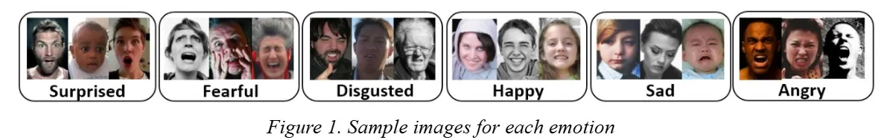
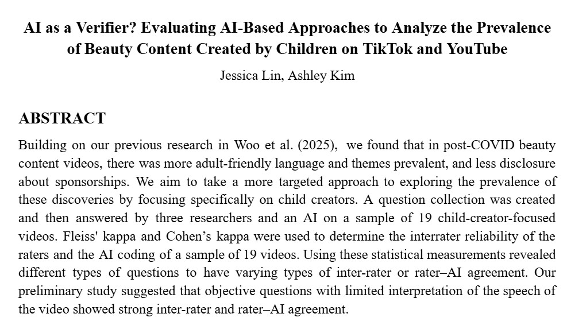
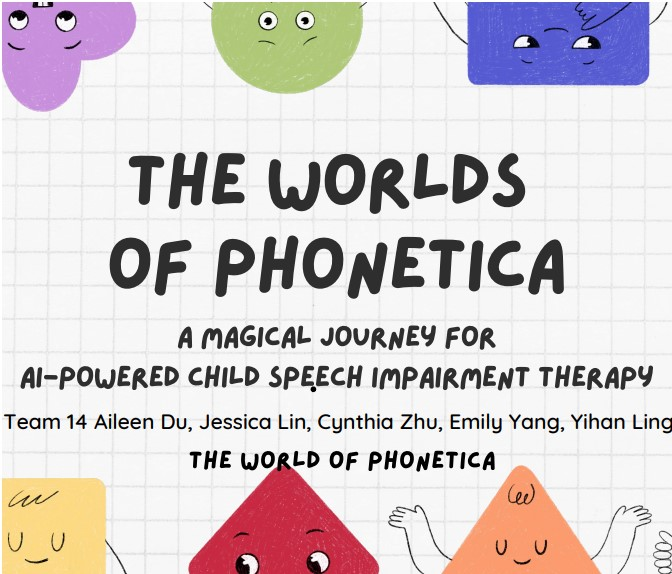
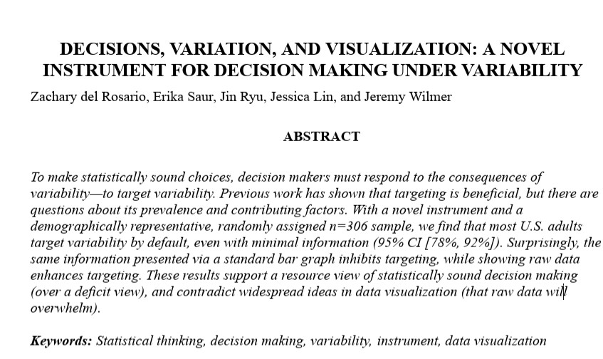
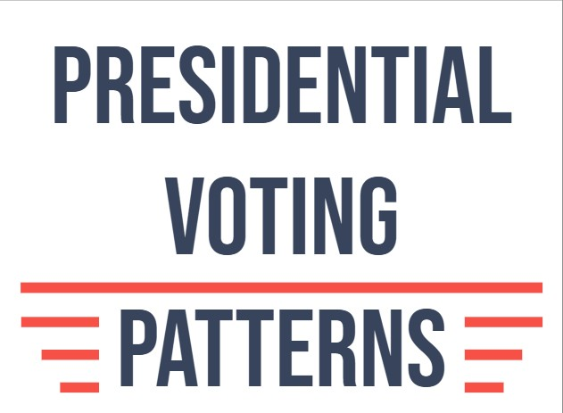
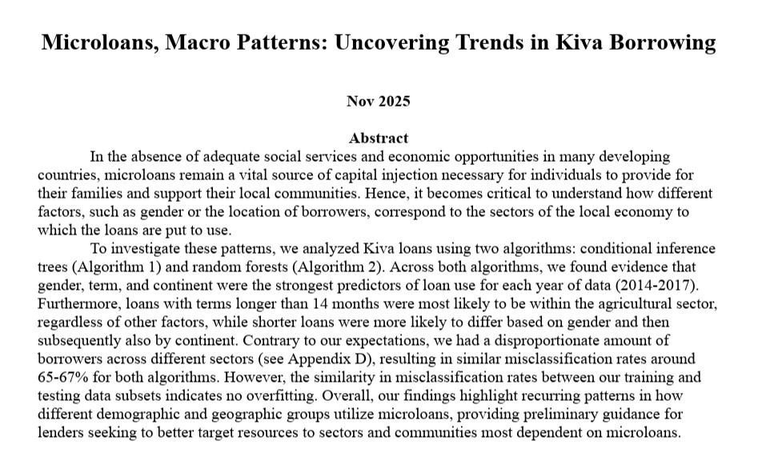
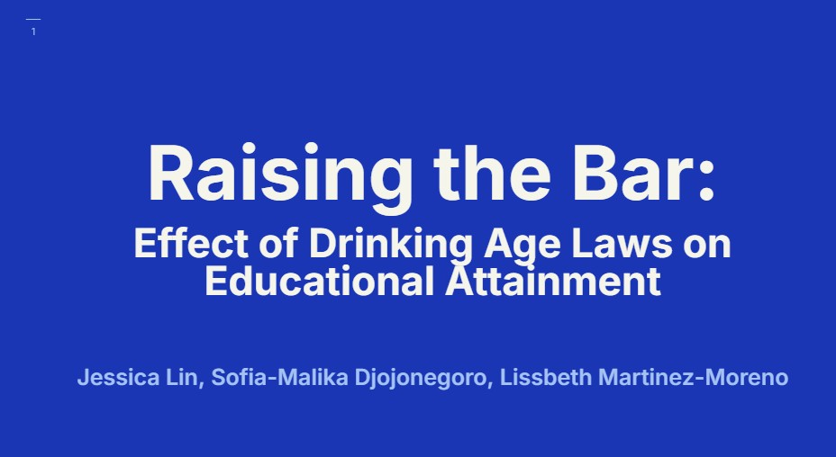
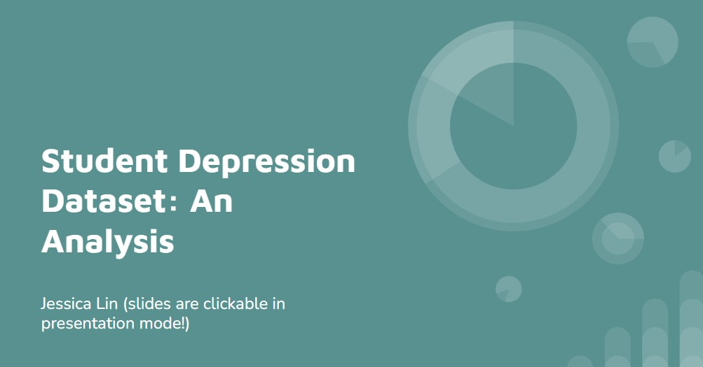

AI & Machine Learning
(Supported by TensorFlow, PyTorch, MatLab, and Python)

Emotion Classification Bias in CNNs
Investigating fairness across racial groups in FER systems
Read more
This investigates whether certain emotions are more likely to be misclassified among different racial groups in facial expression recognition systems. Using the RAF-DB dataset and CNN models, we compare three experimental setups: a baseline model trained on the original imbalanced dataset, a race-balanced model, and single-race models trained on only one demographic group. By analyzing metrics such as accuracy, F1-score, and confusion matrices, and centroid measures, this project aims to better understand how demographic representation affects emotion classification performance and fairness in AI systems.

AI-Driven Qualitative Coding Study
Looking at bias and similarity in AI-driven qualitative analysis
Read more
Co-led an independent research project analyzing child creators' behavioral patterns in social media video data using custom data-collection frameworks. To standardize data collection and eliminate interpretation variance, engineered an iterative Vertex AI prompt-refinement system grounded in established media research. Validated AI alignment against human qualitative coders through statistical inter-rater reliability analysis using Cronbach’s and Cohen’s Alpha, and ultimately designed a scalable roadmap to expand datasets across global long- and short-form content while evaluating AI proficiency on both subjective and objective data categories.

The Worlds of Phonetica
An AI-powered speech therapy game
Read more
"The Worlds of Phonetica" is an AI-powered speech therapy game that leverages deep learning to track oral muscle movements providing feedback for players in the game. This pitch won 3rd place ($1000) at the Babson AI Buildathon.

Divorce Rate Prediction
Using machine learning to predict divorce outcomes
Read more
Using the Split or Stay: Divorce Predictor dataset (170 observations, 54 predictors), we compared linear models and tree-based methods to predict divorce outcomes. Both approaches performed similarly. PCA showed married vs. divorced couples separating into distinct clusters, explaining strong predictive performance.


Social Sciences and Statistical Research
(Supported by R, Stata, IBM SPSS Statistics, Jamovi, Qualtrics, ArcGIS, GeoPandas, PowerBI, ggplot, Microsoft Excel)

Behavioral Study on Uncertainty Visualizations
Examining the impact of uncertainty visualizations on decision-making
Read more
I contributed to the design and deployment of three iterations of a behavioral study examining how uncertainty visualizations influence decision-making outcomes among 300+ participants. This work involved analyzing survey data and refining experimental structure in response to pilot results. In parallel, I conducted an extensive literature review of over 50 academic articles on data uncertainty and visualization to ground the study in existing research. I also co-founded a subproject focused on language framing and data credibility, where I co-led survey design and collaborated closely with faculty to develop and test experimental conditions.
PSYC 310R Research Project
A 2x3 between-subjects factorial experiment on perceived similarity and domain of similarity in roommate relationships
Read more
In PSYC 310R (Research Methods in Psychology), I and three other students conducted a 2x3 between-subjects factorial experiment on perceived similarity and domain of similarity in roommate relationships. Two-way ANOVA suggested domain of similarity drove differences in relationship satisfaction, with recreation habits reporting significantly lower satisfaction than other domains.

Voting Patterns Analysis
Examining trends in US election voting patterns from 2000 to 2024
Read more
In this project, we investigated the trend in voting patterns in the US presidential elections from 2000 to 2024. Specifically, the question of interest was what the extent of voting patterns were across different counties after controlling for year and county fixed effects. We found that overall county voting trends tend to remain the same with some movement, especially with certain areas in the Midwest and South becoming more polarized and right-leaning with each election cycle.

Kiva Microloans Analysis
Predicting loan usage across economic sectors
Read more
Built interpretable tree-based models, including conditional inference trees and random forests, to analyze over 600,000 Kiva microloans and predict how loans are used across economic sectors. Emphasized transparency and visualization by examining decision paths and variable importance, enabling clear interpretation of model behavior. Identified loan term, borrower gender, and geographic region as the strongest predictors of sector use, highlighting patterns relevant to social-impact and policy-oriented decision-making.

Minimum Drinking Age and Education Outcomes
Analyzing the impact of minimum drinking age laws on educational attainment
Read more
For my ECON203 class (Econometrics), I and two other students analyzed minimum drinking age laws data from 1980 and the 2000 U.S. population census to study effects of MLDA on college educational attainment using a fixed effects model. We found MLDA increased the likelihood of obtaining some college education by ~4.2%, with a more pronounced effect for men.

Student Depression and Academic Pressure
Analyzing the relationship between academic pressure and depression among students in India
Read more
The presentation illustrates the cleaning process, analysis, and visualization of the dataset on academic pressure and depression among students in India. The dataset was collected from a survey from over 27,000 students and analyzed using R. The data showed a positive relationship between depression and academic pressure, as students who had depression tend to experience higher levels of academic pressure.